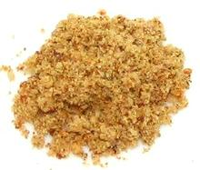

 |
Kan Kan Kan / Suya SpiceSenegal - Kan Kan Kan / Suya | ||||
| Makes: Effort: Sched: DoAhead: |
3/4 cup ** 15 min Yes |
This spice mix from Senegal is mainly used as a coating for meats to be grilled. It is also used as a dry dip for meats and fish, which is very good in my opinion. | |||
|
5 2 5 2 1/2 1/2 |
T T T t t t |
Peanut Flour (1) Cayenne Ginger, powdered Selim Pepper (2) Salt Pepper, black |
Make: - (15 min)
|